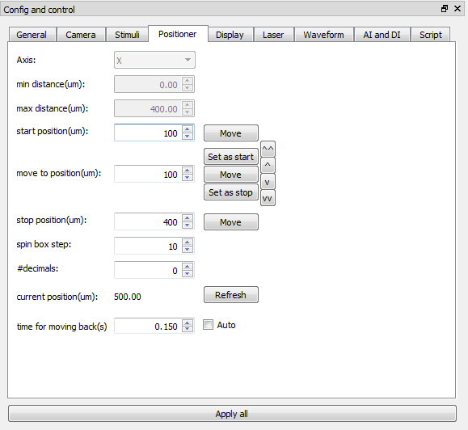
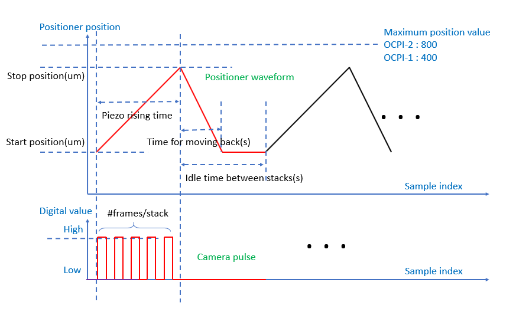

Positioner tab
This tab is for setting the start position and stop position of positioner and also positioner moving back time.
- Axis : is not used
- min distance(um) : is not used
- max distance(um) : is not used
- start position(um) : sets the start postion of the positioner(refer to the positioner control waveform below).
- move to position(um) : moves postioner to the specified position by clicking the 'move' button.
- stop position(um) : sets the stop postion of the positioner
- Refresh button : captures the current position of the positioner.
- time for moving back(s) : Refer to the positioner control waveform below. This time should be longer than (stop position - start position)/(maximum positioner speed) and shorter than idle time between stacks when we don't use bi-directional imaging mode. Imagine can set the shortest time valid automatically by checking the 'Auto' checkbox.

Positioner control wavefrom and camera control pulse
